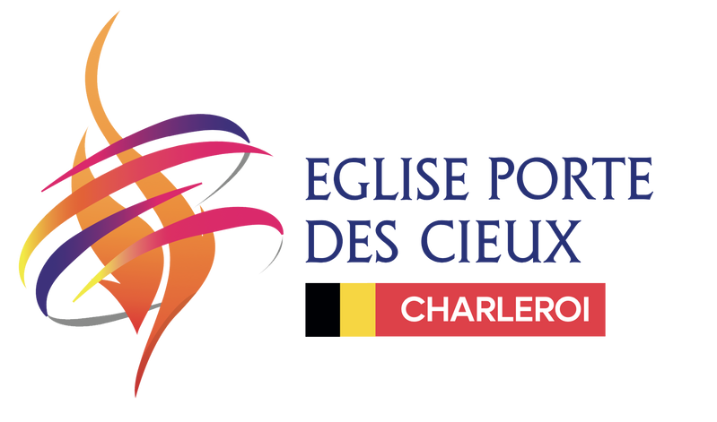
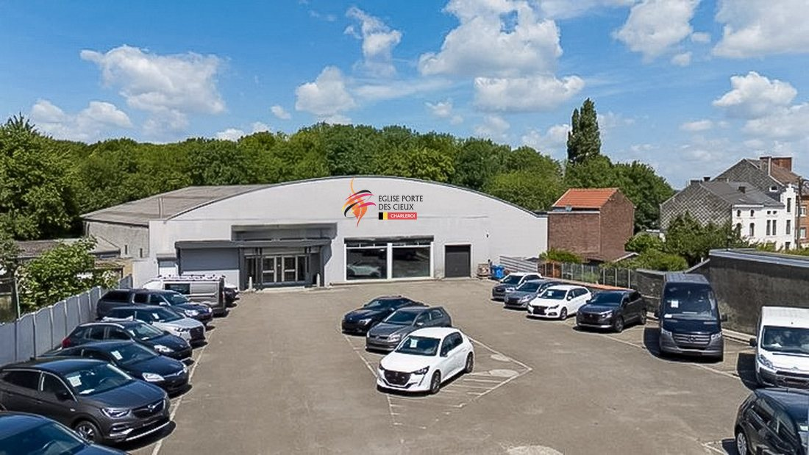

Eglise
Porte des Cieux

Communauté chrétienne dynamique située à Charleroi, Belgique.
Présentation de L’église
Fondée en 2023, l'Église Porte des Cieux Charleroi fait partie de la communauté des églises dont le visionnaire est le Prophète Joël Francis Tatu. Celle-ci a été inauguré officiellement en octobre 2024. C’est une communauté chrétienne dynamique située à Charleroi (Belgique) et dirigée par le couple pastoral David & Emmanuelle Tunno, dont la vie inspirante et le message prophétique marquent leur génération. Par des enseignements puissants et une structure guidée par l’Esprit, ils conduisent à la guérison émotionnelle et spirituelle, et à la restauration des familles par la délivrance. L’église se retrouve chaque semaine dans des groupes de maisons et le week-end pour des célébrations, ainsi que pour d’autres activités mensuelles.
Mission
Être une maison de prière où la présence de Dieu est tangible, un centre prophétique et apostolique où les vies sont sauvées, guéries et restaurées.
Former des disciples solides, engagés et puissants dans l’Esprit, afin d’impacter la ville de Charleroi, la nation de la Belgique et les générations futures par l’amour, la vérité et la gloire de Dieu.
Projet d’acquisition de bâtiment

Objectif
L’acquisition de ce bâtiment, c’est établir un sanctuaire permanent où la gloire de Dieu résidera, où les vies seront transformées et où les générations à venir trouveront refuge et restauration à travers diverses activités spirituelles et sociales.
Besoins
Espace pour les cultes et veillées.
Salles pour les enfants, les jeunes, et les réunions spécifiques
Cuisine et salle à manger pour organisation de repas.
Bureaux pour l'administration.
Salles de séminaires
Budget estimé
- Prix d’achat :
- 800 000 €
- Apport disponible :
- 100 000 €
- Montant financier :
- 700 000 €
Pourquoi soutenir notre projet ?
Impact spirituel
Diffusion de la parole de Dieu et accompagnement spirituel.
Délivrances, équipement, enseignement, guérisons
Impact social
Soutien et activités pour les familles, jeunes, enfants, entrepreneurs, et personnes en difficulté.
Durabilité
Etablissement d’un lieu permanent pour des activités continues et croissantes.
Construisons ensemble la maison de Dieu
Soutenir l’achat du bâtiment de l’église, c’est bien plus qu’un projet matériel : c’est un acte prophétique et spirituel. Tu investis dans l’éternité, tu entres dans la moisson des fruits spirituels et matériels, et tu fais partie de l’accomplissement de la vision divine pour cette génération.
« Celui qui sème abondamment moissonnera abondamment » (2 Corinthiens 9:6)
« Donnez, et il vous sera donné… une mesure bien secouée, qui déborde » (Luc 6:38)
Je donne à L’Eglise Porte des Cieux
Nom : Eglise Porte des Cieux Charleroi
BE95 0019 5644 7358
Code BIC (ou SWIFT code) : GEBABEBB
Comment nous soutenir financièrement ?
- Par un ou plusieurs don(s) ponctuel(s)
- Par un soutien mensuel
Merci beaucoup pour votre désir de soutenir la vision d’ EPDC Charleroi.
C’est l’opportunité de contribuer à répandre l’Evangile à travers le monde et à transformer des vies.
Lorsque vous donnez, faites-le en toute conscience et liberté, avec joie, sans contrainte, ni regret (2 Corinthiens 9:7)
Aucuns biens ou services ne seront fournis en échange de votre contribution.
Que le Dieu de la moisson bénisse votre semence !